E se o software pudesse orientar como um especialista?
Orientação: Apoiar decisões com base em dados, sugerindo caminhos seguros e destacando padrões que muitas vezes passam despercebidos.

Ainda mais completo e definitivo.
As novidades da Versão V26 tornam o TQS ainda mais completo e definitivo.
Viewport
Inovador. Minimiza retrabalhos nas revisões de projeto. Agregue mais valor em suas plantas incluindo detalhes em 3D.
Pilares-Parede
Muito mais veloz. Novo grupo de faixas pode gerar um dimensionamento de armaduras mais econômico.
Outros Elementos
Grandes melhorias no Editor Rápido de Vigas. Nova curva 3D. Nova Planta de Cargas.
Normas Técnicas
Revisitação obrigatória. Nova NBR 8800:2024 no MetalCheck.
Editor Gráfico
Mais assertividade na execução de comandos. Textos c/ tamanhos precisos. Novo Catálogo de Desenhos, com notas de projeto.
Análise Estrutural
Visualizador c/ momentos simultâneos e menos textos. Pacotes EPP e EPP3 c/ análise dinâmica e grelha não-linear mais veloz.
Outros Sistemas
Novidades no MetalCheck, Alvest, SISEs, VPRO e Paredes de Concreto. Lajes Protendidas com 3D.
E muito mais...
Novidades em BIM, IA, Python etc.
Conheça todas as novidades da Versão V26, com detalhes, a seguir.
Recurso inédito para melhorar a documentação, evitar retrabalho e inserir detalhes 3D.
Veja, a seguir, um exemplo simples de uso do Viewport num processo que envolve a revisão de uma planta de fôrma. Dado um pavimento lançado no Modelador Estrutural (com um pilar de elevador ao lado num desenho de referência), vamos gerar a fôrma automaticamente pelo TQS (FORnnnn.DWG). Depois, manualmente, vamos deletar dois textos redundantes em um dos cortes.
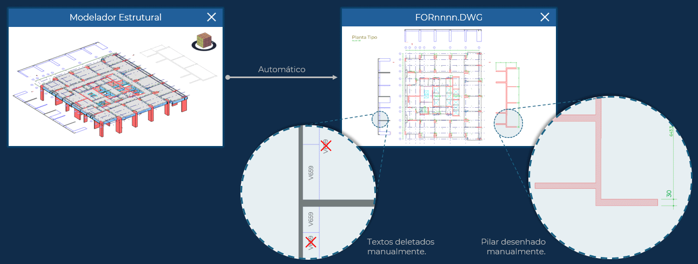
Após a emissão desta planta, imagine que a espessura de uma das paredes do pilar de elevador tenha que ser alterada. Surge, então, a necessidade de criar uma revisão de projeto.
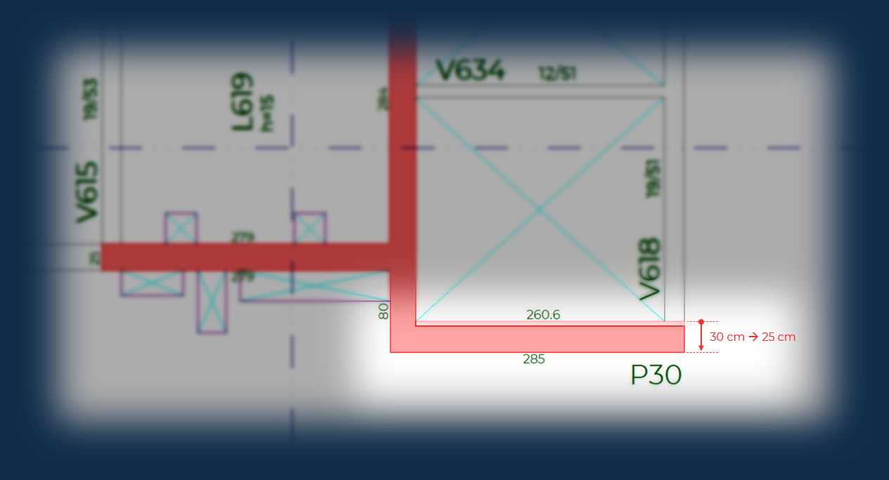
Inicialmente, pensando no processo como é hoje, isto é, sem o Viewport, faríamos o ajuste no Modelador Estrutural e reprocessaríamos o edifício. Mas, e o desenho da planta de fôrma? As duas edições realizadas anteriormente – textos dos cortes apagados e o pilar de elevador desenhado ao lado – teriam que ser revisadas e/ou ajustadas manualmente.
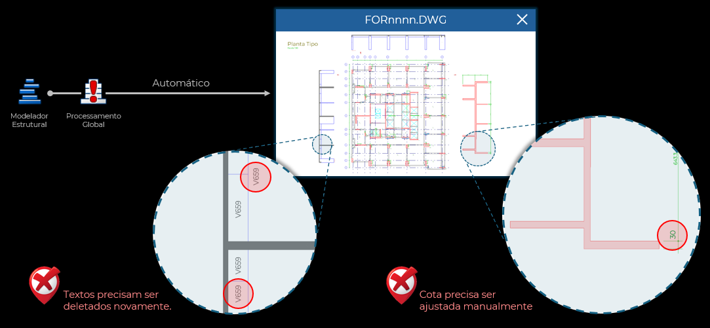
Agora, vamos ilustrar como seria esse mesmo processo com o novo Viewport. Primeiramente, vamos criar dois novos desenhos (FORnnnn-Editado.DWG e FORnnnn-Pilar.DWG) e adicionar um Viewport em cada um deles, ambos referenciando o desenho de fôrmas gerado automaticamente pelo TQS (FORnnnn.DWG).
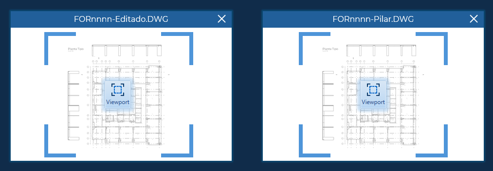
A primeira vista, os Viewports parecem blocos de desenhos. A diferença, porém, é que eles são editáveis numa camada extra. No Viewport do primeiro desenho (FORnnnn-Editado.DWG), é possível incluir poligonais que eliminam os textos redundantes dos cortes. No Viewport do outro desenho (FORnnnn-Pilar.DWG), vamos criar uma poligonal que exclui o que está ao redor do pilar de elevador.
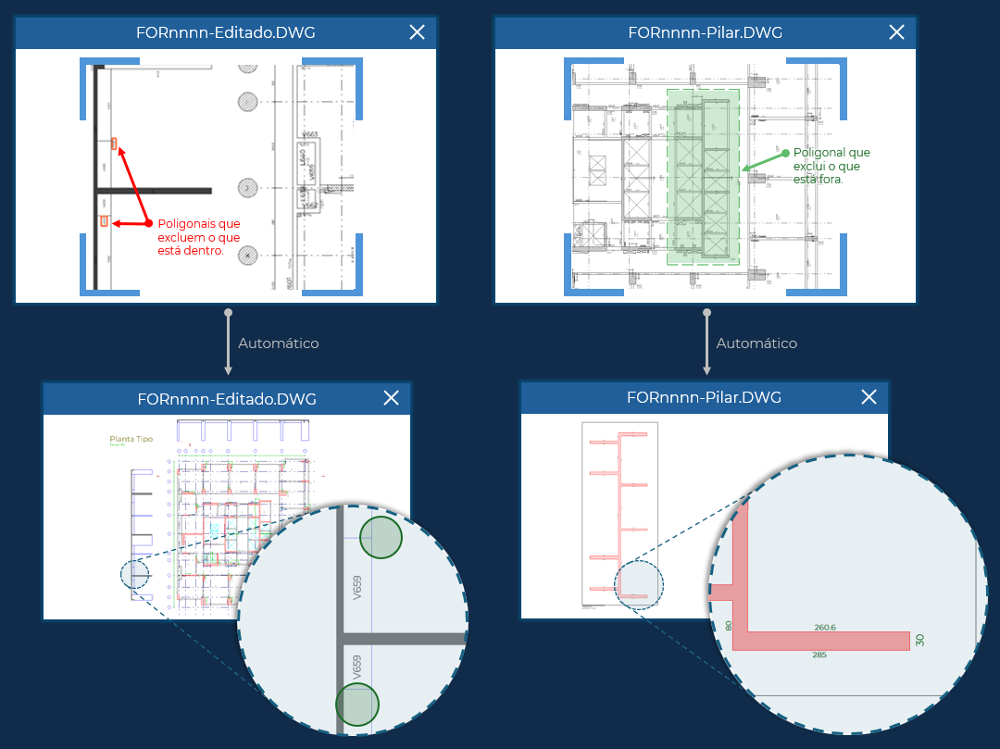
Com isso, ambos desenhos ficam prontos para serem emitidos em uma planta. Até então, o resultado inicial (antes da necessidade da revisão de projeto) é idêntico ao do processo que usamos atualmente.
Mas, e quando for necessário alterar a espessura de uma das paredes do pilar de elevador? O que muda na revisão de projeto com o Viewport?
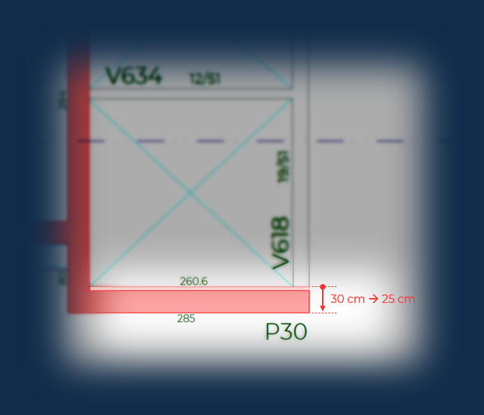
Aqui é que a mágica acontece.
Ao regerar o desenho do TQS (FORnnnn.DWG) com a alteração realizada no Modelador Estrutural, ambos os desenhos com Viewport (FORnnnn-Editado.DWG e FORnnnn-Pilar.DWG) serão automaticamente atualizados, e o melhor, não perderão as edições na camada extra (onde havíamos inserido as poligonais de recorte). Assim, nenhuma edição será necessária para emitir a revisão de projeto.
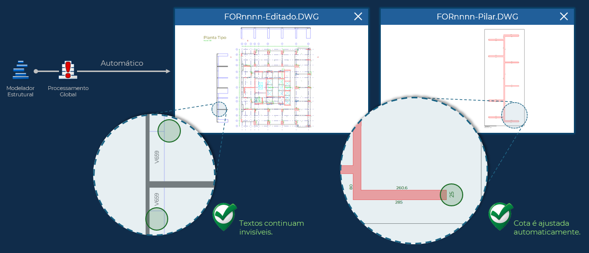
Esse exemplo demonstrou um pouco do potencial do Viewport. Uma quebra de paradigma. Uma possibilidade de tornar as frequentes revisões de projeto menos onerosas. Mas, isso não termina aqui. Conheça, a seguir, mais algumas características do Viewport e surpreenda-se com o seu funcionamento em 3D.
Além de funcionar com desenhos 2D, o Viewport também funciona em 3D. A lógica é bem semelhante, podemos inserir um desenho 3D como Viewport.
E isso traz uma possibilidade que não existia antes: colocar um 3D dentro de um DWG.

No duplo clique, abrirá o editor de objetos 3D (EAG3D).
Nele é possível isolar um volume de visualização e a posição da câmera.

Na inserção é possível ajustar a escala, identificação e outros atributos.

Veja a seguir um exemplo de um detalhe 3D do pavimento junto ao desenho de formas.

Temos visto cada vez mais desenhos de armaduras com detalhes 3D ao lado. Com o Viewport, isso é possível. Basta inserir um Viewport 3D e isolar o elemento estrutural.
Para agilizar esse processo, criamos comandos para inserir automaticamente esses detalhes 3D em vigas, pilares e fundações, compatíveis com a plotagem em PDF.
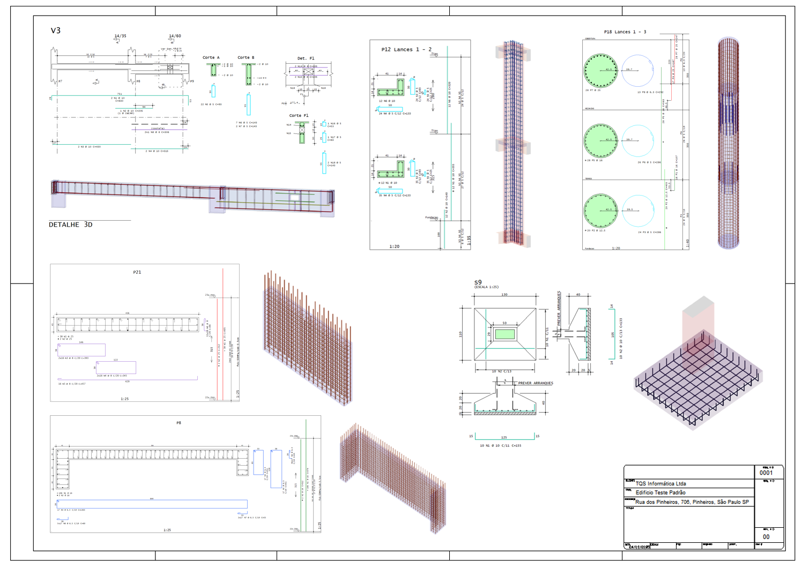
Diversas novidades para melhorar a produtividade e a assertividade na edição de desenhos.
A janela lateral com árvore de objetos e tabela de propriedades agora está presente no Editor Básico de Desenhos.

Dados globais do DWG organizados na árvore: níveis, captura, grade, blocos, e outros.

Alguns itens da árvore reagem ao clique. Clique para ligar/desligar um nível.


Também é possível ligar/desligar captura, grade, ortogonal e mais.


Na tabela de propriedades, edite nível, cor e estilo para qualquer elemento gráfico. Para textos, altura e ângulo. Para objetos inteligentes como cota e armadura edite todos dados. Um ganho significativo de produtividade para edição de um ou múltiplos objetos selecionados.


Durante a execução de comandos, a tabela de propriedades é usada para listar todos os modificadores. Mais visibilidade e explicações.

Durante uma seleção, os elementos capturados brilham com o movimento do mouse.
Nos comandos de rotação, espelhamento, mover parcial, cortes e outros, há a pré-visualização durante a execução.
As cotagens angulares agora são associativas. Na edição com grips, formato e valor são atualizados automaticamente.
Novo comando permite trabalhar com a janela rotacionada. Útil para modelos inclinados em planta.
Nova captura de ponto perpendicular à uma reta.
O cálculo do tamanho de textos foi aprimorado e agora podemos trabalhar com exatidão.

Mais controle para alinhar e posicionar textos. Nos desenhos de armaduras, note a regularidade no espaçamento entre textos. Isso impacta diretamente a qualidade dos desenhos de armaduras.
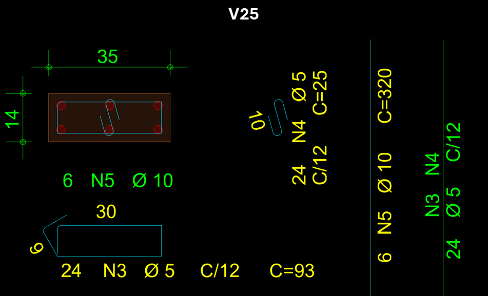
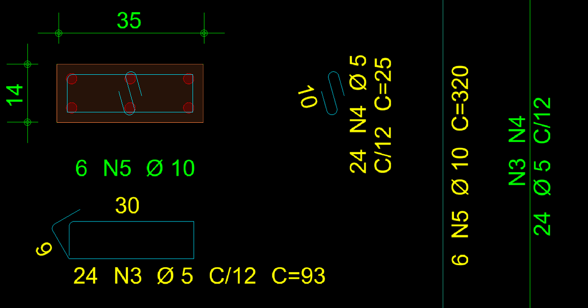
O posicionamento de textos em tabelas é um outro exemplo.
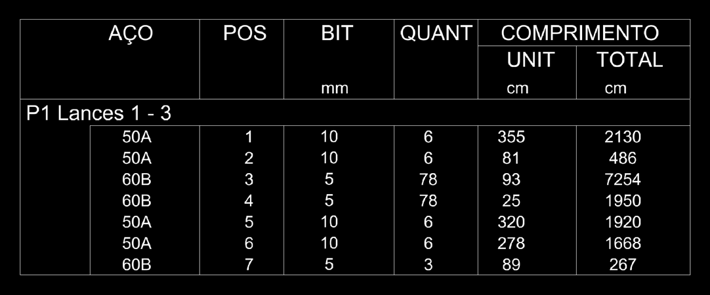
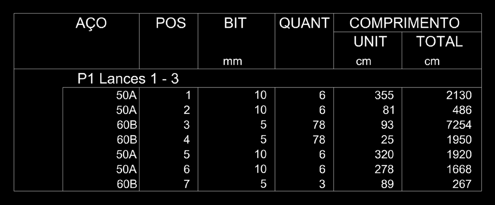
Os textos com fontes em negrito e itálico agora também são suportados em ambiente 3D.

O Editor Gráfico agora suporta imagens no formato PNG. Além disso, agora é possível inserir a imagem como referência ou embutí-la no DWG.
Atenção às revisões normativas.
A recém publicada norma-mãe de ações e segurança tem diferenças pontuais em relação à NBR 6118 no que se refere aos ponderadores das cargas nas combinações últimas normais (ELU).
Nos Dados do Edifício, foram criadas opções para facilitar a definição desses ponderadores.
A Emenda da NBR 6118 está prevista para ser publicada ainda este ano.
Eventuais alterações serão estudadas e adaptadas, se necessárias.
NBR 6118A recente revisão de 2024 contém inúmeras novidades em relação ao texto anterior de 2008.
Essas novidades foram devidamente incorporadas ao MetalCheck. Maiores detalhes a seguir nesta página.
Mais itens no Painel Central.

Plantas ordenadas pelo seu número e não mais pelo nome do desenho.

Desenhos de lajes treliçadas organizados no grupo "Treliçadas".
Nova família de pilares mistos revestidos e preenchidos integrados com o Metal Check. Mais detalhes no item MetalCheck a seguir.


O peso próprio pode ser customizado para simular lajes com diferentes formatos e materiais.

Altere a escala de todos os pavimentos de uma só vez.

Mais facilidade na interpretação de resultados. Pacotes EPP e EPP3 com dinâmica.
Novo comando para visualizar somente os valores que interessam.
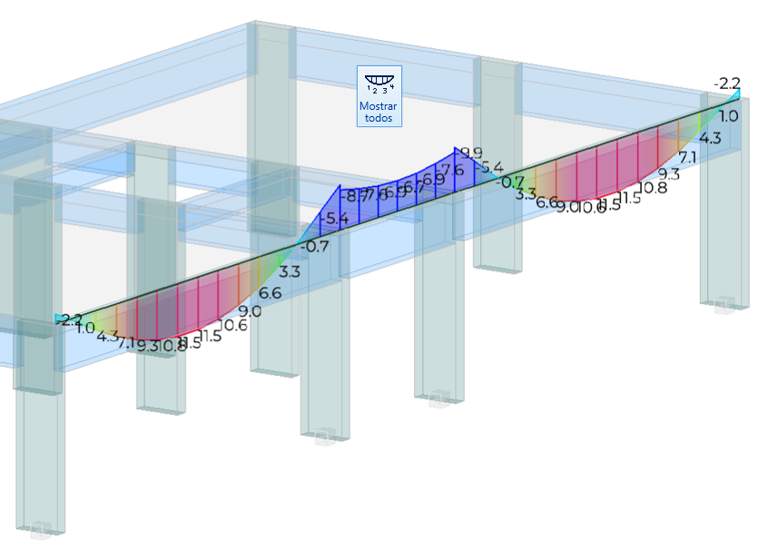
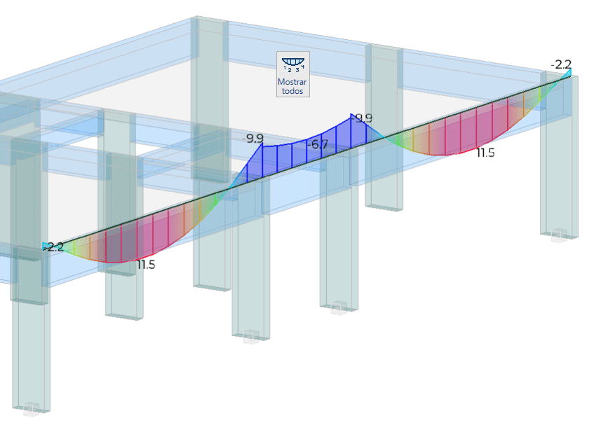
Mais facilidade na interpretação de momentos fletores nos pilares.
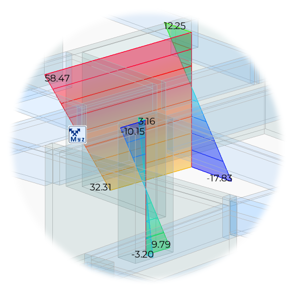
Agora com todos valores extremos detectados, independentes do sinal.
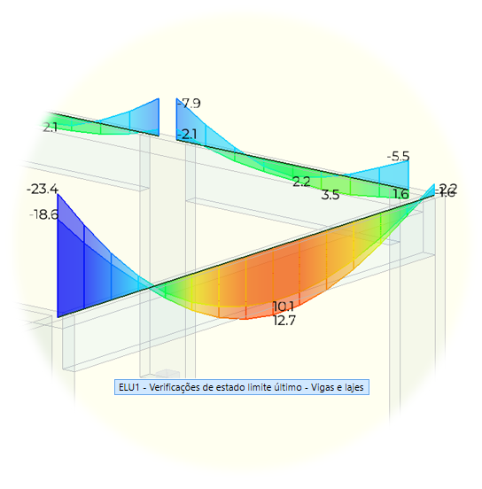
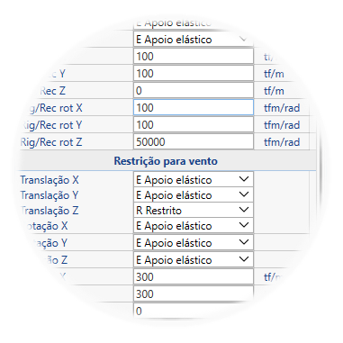
Dados na tabela de propriedades.
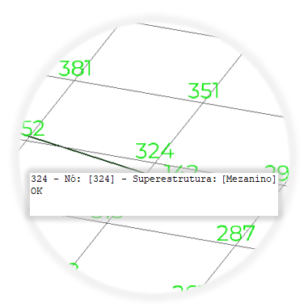
Mais informações do nó localizado.
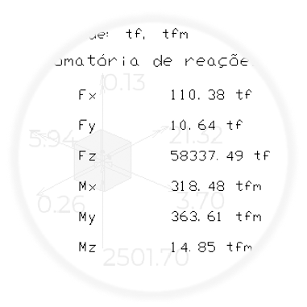
Escala de cores e tabela de reações salvos no arquivo.
Visualizador
Agora é possível comparar resultados entre quaisquer combinações calculadas com efeito construtivo.
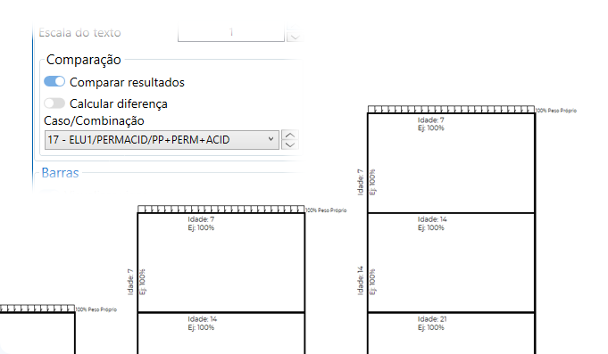
Dinâmica
Análise modal foi introduzida no solver leve. Com isso, o estado-limite de vibrações excessivas (ELS-VIB) pode ser avaliado em estruturas de pequeno porte.
Grelha Não-Linear
Adaptado para o solver leve, a análise de flechas e aberturas de fissuras com o grelha não-linear ficou muito mais veloz.
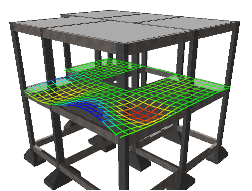
A malha do pilar-parede discretizado foi incorporada ao pórtico espacial principal (antes, estava nas subestruturas) para uma análise P-Δ levemente mais precisa. Seleção de modelo ELU ou ELS no Visualizador de Análise Dinâmica.
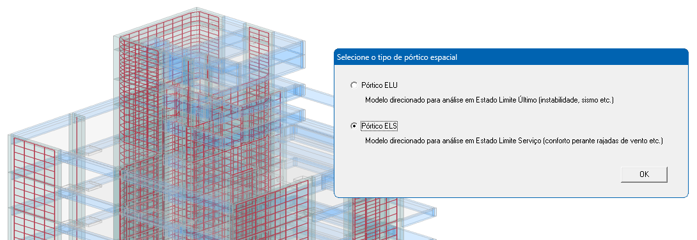
Duas grandes novidades para pilares-parede. Nova curva 3D.
Fundamental na análise estrutural de núcleos rígidos de edifícios altos, a modelagem com pilares-parede discretizados foi revisitada com o objetivo de melhorar a performance e a sua interface com o dimensionamento das armaduras. Como resultado desse intenso trabalho de pesquisa e desenvolvimento, temos a satisfação de apresentar duas grandes novidades na versão V26.

Modelador
Novos comandos foram adicionados no Modelador Estrutural para criação/edição dos grupos de faixas.
Pórtico Espacial
A malha de barras mais densa no pórtico espacial continua sendo gerada de acordo com a discretização das faixas para garantir respostas precisas na análise estrutural.

Dimensionamento
Os grupos de faixas são usados exclusivamente para o dimensionamento das armaduras. Cada grupo é dimensionado automaticamente com integração da seção transversal e dos esforços solicitantes das faixas.
Verificação
Um novo relatório é gerado com todas as informações das faixas e grupos. No Editor Rápido de Armaduras, é possível verificar os grupos graficamente.
Não se trata apenas de uma visualização mais bonita. A nova curva resistente N-Mx-My proporciona uma navegação mais fluida e imersiva dentro de um ambiente puramente 3D. Conta com modo de visualização colorido e um específico para verificação.


Mais facilidade na interpretação de resultados. Passe a enxergar graficamente situações que passavam despercebidas.

A curva 3D está disponível no Editor Rápido de Armaduras de Pilares, no Visualizador de Efeitos de 2ª Ordem, na Calculadora FCO e na Calculadora do Alvest.


Mais controle entre o formato e a amarração com o estribo.

Nova verificação, com aviso no desenho e no relatório.

Aumento do limite de combinações em pilares.

Uma nova experiência, da visualização à verificação.
Precisão ponto a ponto. Diagramas de Armadura necessária x Armadura existente para flexão e cisalhamento considerando as dimensões efetivas de largura e altura da vigas com variação de seção no meio do vão.

Visualize a seção considerada para os diagramas de avaliação das armaduras. Identifique possíveis armaduras em excesso.

Ou armadura necessitando de complemento.

Ou se a seção da viga em algum trecho é insuficente.
Edite suas armaduras com a fluidez dos grips interativos.
Diretamente na janela gráfica, sem precisar procurar por comandos no Ribbon.
Altere as pontas com cliques e um simples arrastar,


Agrupe armaduras


E junte-as.


Duplo clique para editar qualquer armadura.

F5 para apagar. Menos cliques, mais produtividade.
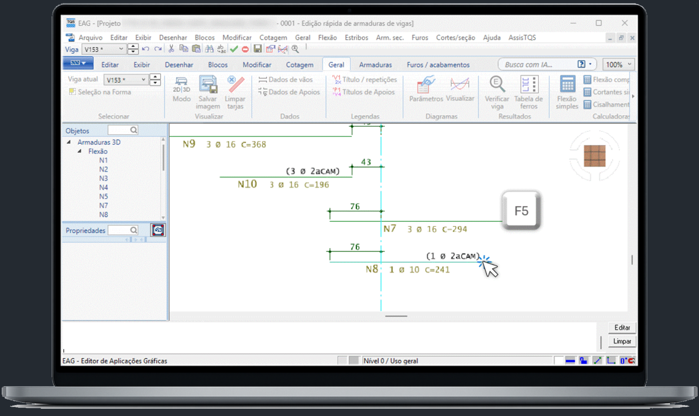
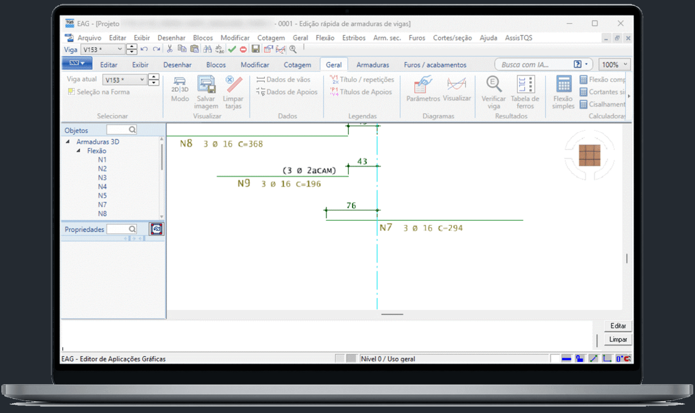
Diagramas com gradiente de cores. Um visual mais claro e intuitivo, para entender os esforços de forma imediata.
O comando de verificação de vigas agora considera momentos mínimos e taxa de armadura mínima. Indica onde o momento mínimo foi preponderante e sinaliza quando a taxa mínima de armadura não é atendida na seção.


Nova opção de identificação das armaduras do furo para mais flexibilidade.
Otimização no cálculo da armadura de suspensão para mais economia.

Novo elemento para lajes nervuradas e melhorias no sistema.
Adicionamos o comando unir nervuras no Modelador Estrutural para simular o efeito de anuladores de nervuras


Refinamento no cálculo. Nova planta de cargas.

Na modelagem genérica de blocos, a área ampliada do pilar passa a ser considerada na verificação da biela, conferindo ainda mais rigor e consistência ao cálculo.
As configurações de tirantes agora são mantidas automaticamente ao fechar o programa para melhorar seu fluxo de trabalho.

Gere a planta de cargas na base de todos os pilares e atenda situações específicas, como pilares sobre cortinas ou radier. Selecione apenas os pilares desejados e gere automaticamente a planta de cargas, pronta para análise e documentação.

Gerenciamento organizado de blocos de desenho e novas notas típicas de projeto
Agora é possível gerenciar todos os blocos de desenho na mesma interface, com categorização e miniaturas
Veja como ficou muito mais fácil descobrir e encontrar os desenhos distribuídos com o sistema.

Organizamos os blocos que fornecemos em categorias e subcategorias

Adicionamos filtros e busca para facilitar a localização

Colocamos controles para que o usuário classifique também os seus desenhos
Afinal o objetivo é que o gerenciador mostre realmente todos os desenhos

Neste mesmo editor, disponibilizamos diversas notas típicas de projeto

Se precisar editar um bloco, facilitamos a abertura do editor gráfico com um duplo clique  na miniatura
na miniatura
Agora, no editor gráfico, ao usar o comando Bloco catalogado essa nova interface é aberta para localizar o bloco a ser inserido

Se existirem atributos a serem preenchidos, isso pode ser feito no menu lateral e o resultado pode ser pré-visualizado em tempo real


Melhorias na visualização tridimensional com novas tecnologias e recursos de texto.
A renderização em Direct3D agora conta com todos recursos de visualização que antes só existiam em OpenGL.
São exemplos: Textura, sombra, iluminação, fundo em imagem ou 3D, planos de corte e mais.

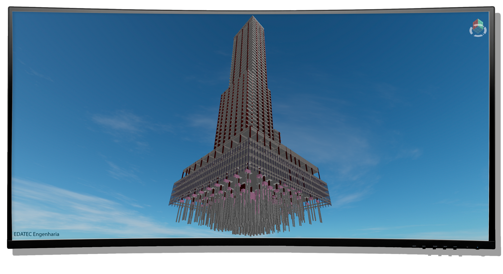
Integração aprimorada com ferramentas BIM e novos recursos de importação.
Muitas vezes o modelo BIM é compatibilizado a partir de coordenadas topográficas.
Por isso, simplificamos a compatibilização de coordenadas, funciona assim:
No TQS, o usuário escolhe um ponto no modelo e define as coordenadas e a rotação que aquele ponto vai referenciar.

No Revit®, com o mesmo sistema de coordenadas definido, o usuário importa o modelo via plugin.
O modelo é transformado automaticamente de forma a compatibilizar ambos os sistemas de coordenadas.


A importação de tubos já era possível em versões anteriores do TQS
Agora, também é possível importar marcações de furações, que são os volumes finais definidos em BIM necessários para comportar a tubulação e sua devida folga
Com estes elementos importados, os furos podem ser criados automaticamente com um comando e os reforços serão calculados no processamento
Para isso, seguimos as recomendações de padronização de furações em IFC da Abrasip

Adaptamos nosso plugin com o Revit® para garantir a compatibilidade com o Revit® 2026.
O novo plugin também é compatível com o TQS v25.

Agora é possível customizar o título do edifício na janela de pré-visualização, antes de criá-lo.


Para facilitar a limpeza do IFC, colocamos a quantidade de pontos que cada categoria agrega em sua geometria
A reordenação por quantidade de pontos facilita a busca das categorias que mais ocupam espaço na memória


Ao selecionar uma categoria, na área gráfica ou na tabela de categorias, ela é evidenciada na pré-visualização 3D


para facilitar a visualização interna, adicionamos a opção de ligar a transparência do modelo.


Nova ABNT NBR 8800:2024 e pilares mistos no Modelador Estrutural.
A ABNT NBR 8800 de 2008 foi substituída pela nova versão 2024, atualizando 16 anos de experiência em projetos de estruturas metálicas

Compressão:
A formulação do índice de esbeltez λ0 foi revisada, alterando também a força normal resistente Nc,Rd;
Força cortante:
O cálculo do coeficiente Kv foi revisado alterando a força cortante resistente VRd;
Momento fletor:
Sofreu algumas alterações, dentre elas a determinação do coeficiente Cb que impacta diretamente no momento fletor resistente MRd.
Em nossos testes, evidenciamos alterações de até 20% no valor resistente;
Pilares mistos:
Foi fortemente revisado, com alterações diretas no cálculo da normal resistente de cálculo Nc,Rd
Agora é possível lançar pilares mistos no Modelador Estrutural, inclusive, misturando com elementos de concreto armado.
Os tipos disponíveis são: Retangular preenchido e revestido (com perfil totalmente ou parcialmente embutido), e circular preenchido

E usar a modelagem junto com os esforços do TQS para dimensionamento no MetalCheck

O processamento também gera uma tabela com os quantitativos dos novos elementos

Editor 3D e novas opções de desenho.
O motor gráfico 3D chegou ao Editor de Lajes Protendidas. Como resultado, novas opções de desenhos de cabos e diagramas tridimensionais encontram-se disponíveis, inclusive com gradiente de cores. Todos comandos de criação/edição de RPUs e RTEs continuam iguais, preservando a sua experiência.


Novos blocos de desenhos com melhor representação das ancoragens ativa e passiva.(1)

Visualização de cotas no cruzamento de cabos e de linhas adicionais de cotagem controlada por parâmetros de visualização isolados. Novo parâmetro que permite ativar/desativar a visualização do momento de fissuração nos diagramas em planta. Opção de usar o Visualizador de Grelha/Pórtico anterior.

Novo Editor de Sondagens 3D com interface ainda mais amigável.
Reescrito para simplificar o processo de criação e inserção dos dados relacionados a sondagens e camadas de solo, o novo editor reúne tudo em uma única janela, com preenchimento mais rápido e intuitivo.

Camadas do solo com máxima clareza.
Diversas opções de visualização.

Mais cores. Mais agradável. Mais 3D
Explore as propriedades do solo em 3D com cores definidas por profundidade, facilitando a interpretação visual.

Mais cores. Mais agradável. Mais 3D
Visualização tridimensional com cores atribuídas às diferentes camadas de solo.

Visualização simultânea de múltiplos furos.
Todos os furos de sondagem em perspectiva, de uma só vez em modo 3D.

Visualização simultânea de múltiplos furos.
Todos os furos de sondagem em perspectiva, de uma só vez em modo comparativo.
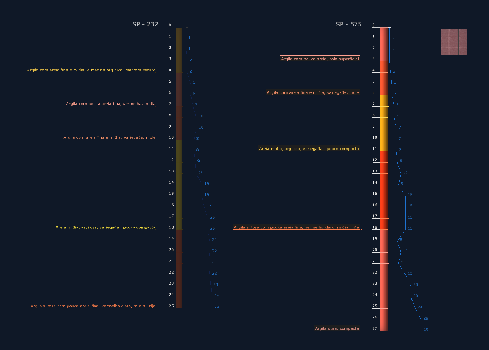
Melhorias no Modelador Estrutural de alvenarias, fabricantes, calculadoras e mais.
Foi adicionado um novo tipo de laje: Laje Vigota. As lajes com vigotas são modeladas de forma unidirecional e o peso próprio é ajustado conforme parâmetros.
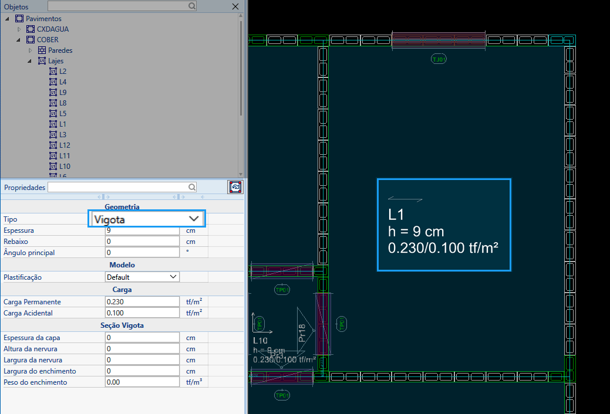
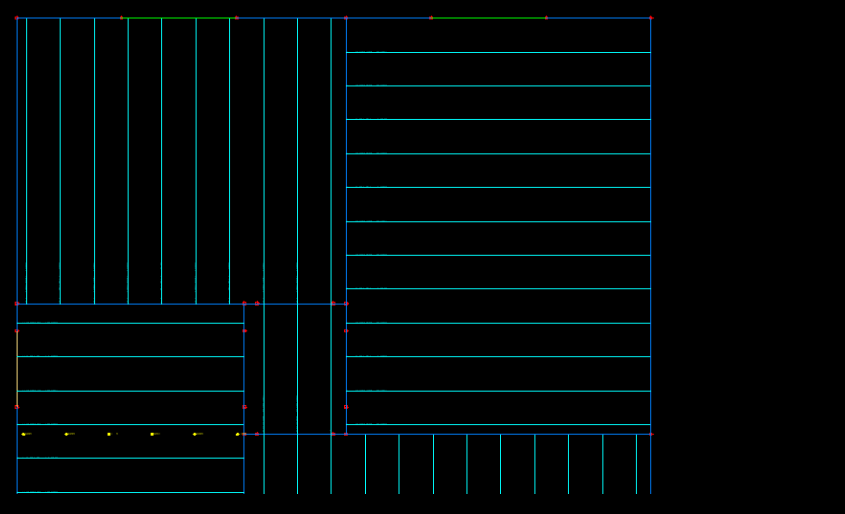
A imposição de grautes é uma operação que toma bastate tempo do engenheiro, pensando nisso, disponibilizamos novos comandos:
Copiar e colar grautes: Para copiar grautes entre pavimentos;
Espelhar grautes: Para espelhar grautes em um mesmo pavimento com eixo de simetria.
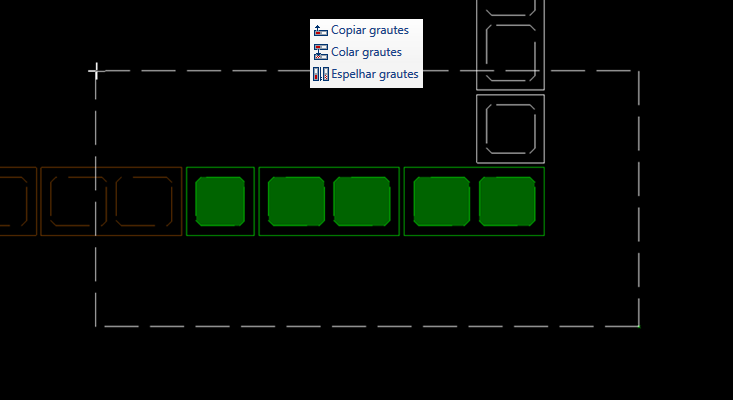
Novo comando para adicionar novas linhas de cotagem a partir da última cota com um clique.
Introduzimos o modo de visualização rápida, pensado em ganhar performance em edifícios maiores.
Melhoramos o algoritmo de distribuição de blocos, com isso, foi possível evitar sobreposição com blocos impostos.
A curva resistente N-Mx-My agora é desenhada em 3D, trazendo graficamente um panorama geral de todas as verificações.
Comando para inserir graute junto com armadura pré-selecionada, para definição mais ágil de reforços.
Novo controle para desligar o recálculo automático de verificações. Em edifícios maiores, o usuário poderá acionar a verificação apenas quando for necessário.
A calculadora também foi revisada e houveram melhorias na performance.
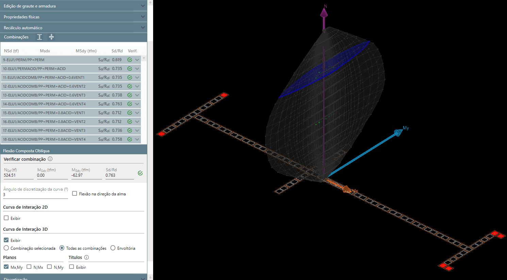
Editor de Blocos de Alvenaria
Agora é possível visualizar e acessar diretamente os desenhos de blocos grauteados por meio do editor.
As variações são geradas automaticamente em tempo de edição.
Além disso, o editor está com desempenho aprimorado.


Nova tabela com o índice estimado de carbono incorporado no relatório de "Custos dos Materiais".
As taxas usadas na estimativa podem ser calibradas em critérios.
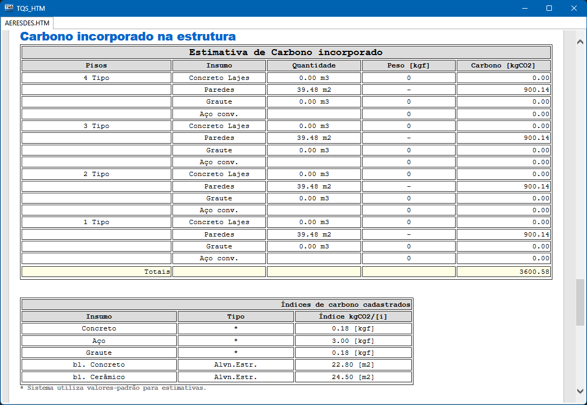
Agora o arquivo compactado (.TQS) leva as referências externas do Modelador Estrutural de Alvenaria no arquivo compactado.
Automação na verificações das armaduras, melhorias em relatórios e novos parâmetros de sustentabilidade.
Verificação de armaduras. Mais precisão, mais automação.
As armaduras de tração e cisalhamento lançadas pelo usuário nas paredes da entrada gráfica agora são consideradas e verificadas pelo programa em cada subconjunto.
Se as armaduras lançadas nas paredes pelo usuários forem suficientes, o sistema remove as tarjas automaticamente.


Nos desenhos de envoltória, os avisos de necessidade de armadura de cortante são removidos e as armaduras são representadas.

No relatório, é possível ver para cada subconjunto das direções principais de subestruturas as armadura existentes e necessárias para cisalhamento e tração.

Quando a armadura definida pelo usuário atende a verificação, os erros graves somem.


As armaduras convencionais impostas na entrada gráfica aparecem em todas as vistas — gabarito, planta e cortes.

Possibilidade de edição da taxa geométrica de armadura vertical e do limite da resistência de cálculo (νdmax) por subestrutura.
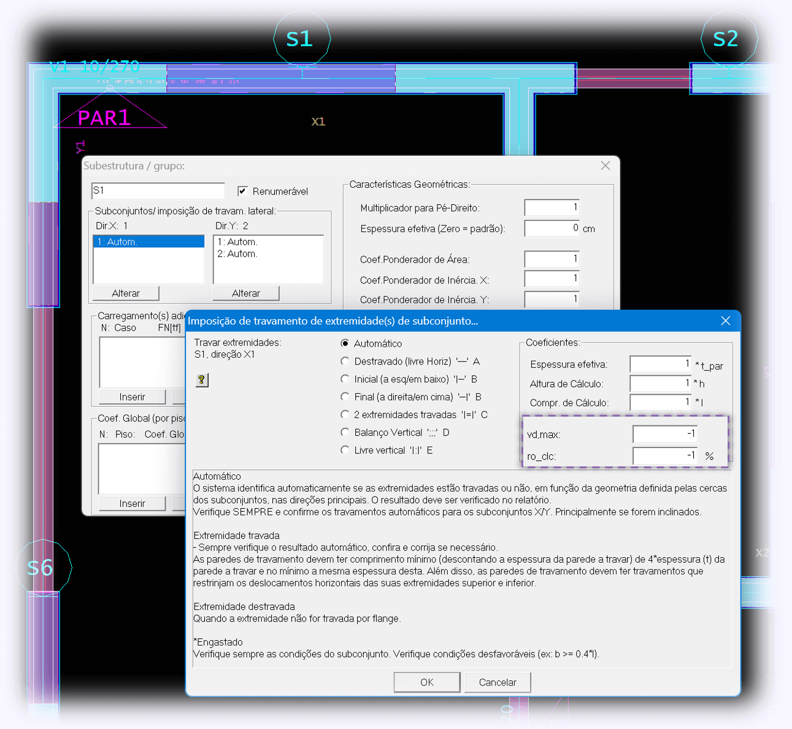
A seção Carbono incorporado na estrutura foi adicionada ao relatório de Resumo e Custos dos Materiais para Paredes de Concreto.

Novos Critérios. Que impactam tanto o cálculo estrutural quanto a forma como os desenhos são gerados. Resultados precisos, adaptados ao seu projeto.


Relatório ainda mais completo. Com geometrias, formulações, verificações e resultados — tudo reunido em uma apresentação clara.
O relatório simplifica o gerenciamento e as verificações, mantendo a mesma uniformidade dos demais sistemas TQS.


Recursos para protensão parcial, melhorias de produtividade e atualizações normativas
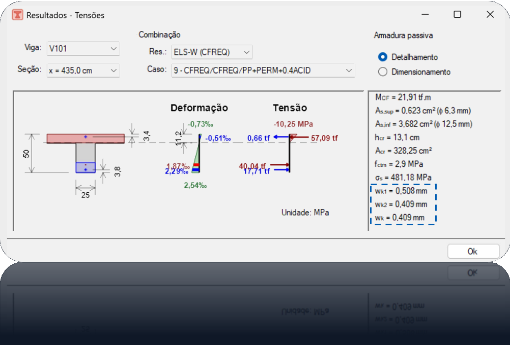
Visualização dos pontos de lançamento no traçado dos cabos.
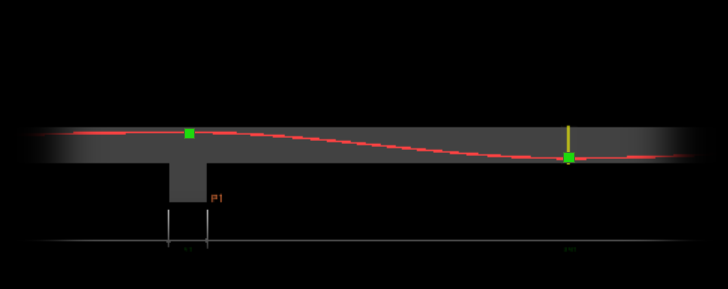
Melhoria no lançamento dos cabos (Copiar e renomear cabos).
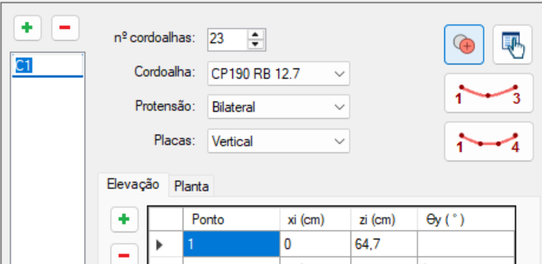
Indicação do limite máximo de compressão para as verificações ELS-D e ELS-F (Revisão da NBR6118:2024).
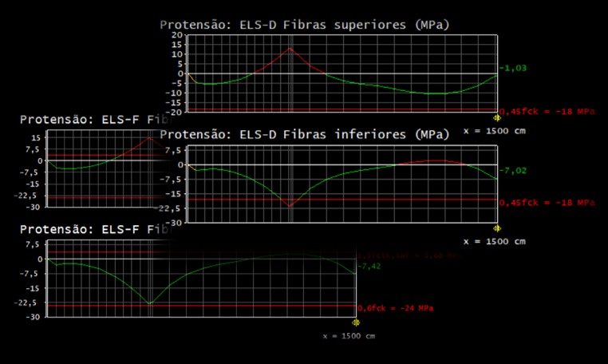
Programação e automação com Python integrado ao TQS.
Novas funções ampliam as possibilidades — os exemplos abaixo mostram apenas parte do que você pode criar.
Com as novas ferramentas de IA generativa, ficou ainda mais fácil usar Python no TQS. Basta descrever o que você precisa, fornecer a documentação da API Python/TQS e a IA ajuda a criar o código.
Uma ferramenta muito poderosa para otimizar tarefas e ampliar os recursos do programa, do seu jeito.
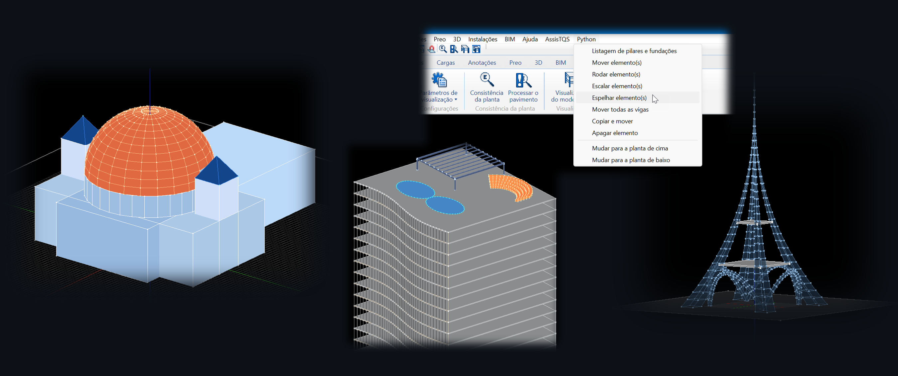
Nesta seção, as imagens foram todas geradas a partir de scripts Python no TQS feitos com uso de IA.
Outras melhorias implementadas na versão 26 para aprimorar sua experiência.
Interface renovada para facilitar a recuperação de arquivos.
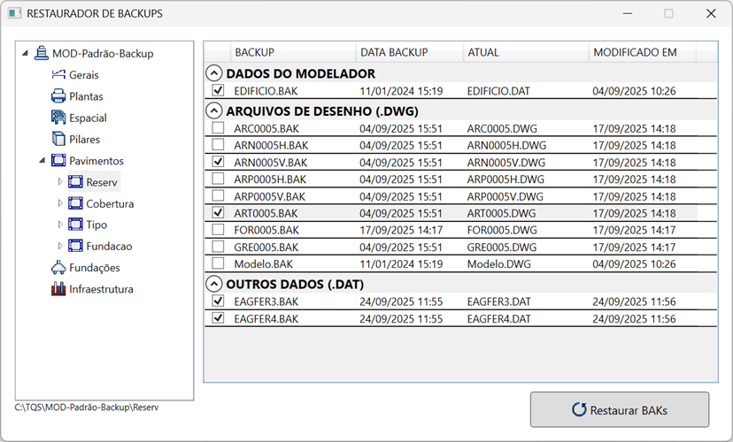
Interface padronizada e com melhorias de interface em diversas calculadoras.
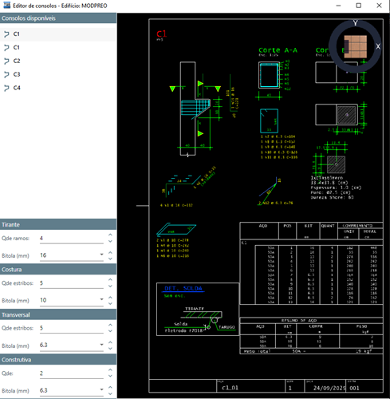
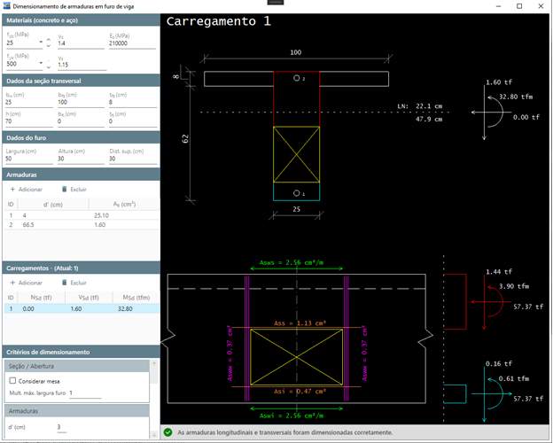
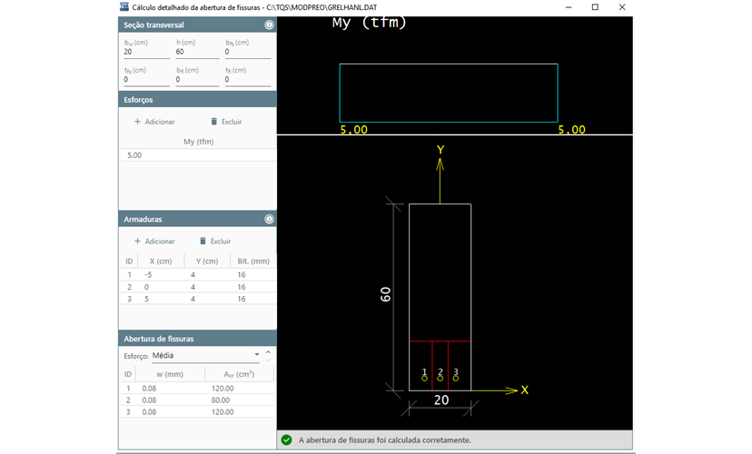
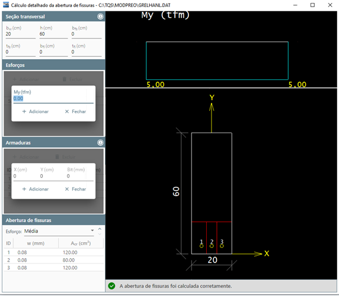
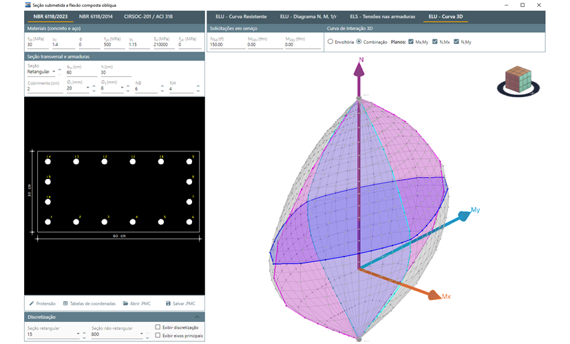
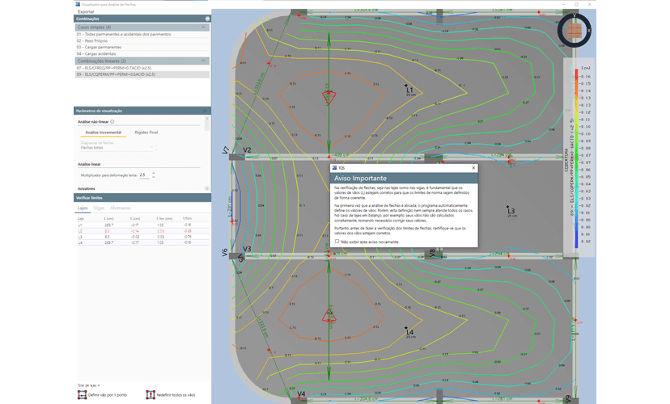
Os desenhos de reservatórios foram completamente revisados e houveram melhorias no detalhamento.
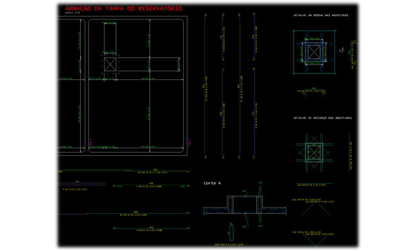
Realinhamento de textos com seleção múltipla para maior produtividade.
Foram adicionados controles para facilitar a seleção de combinações.
Integração direta com o sistema SIDAC/BIP para análise de sustentabilidade.
Há duas formas de adquirir o TQS V26.